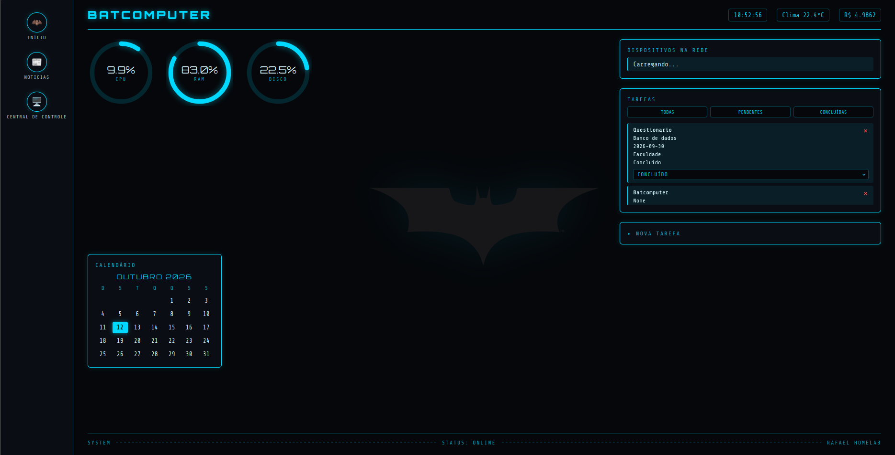
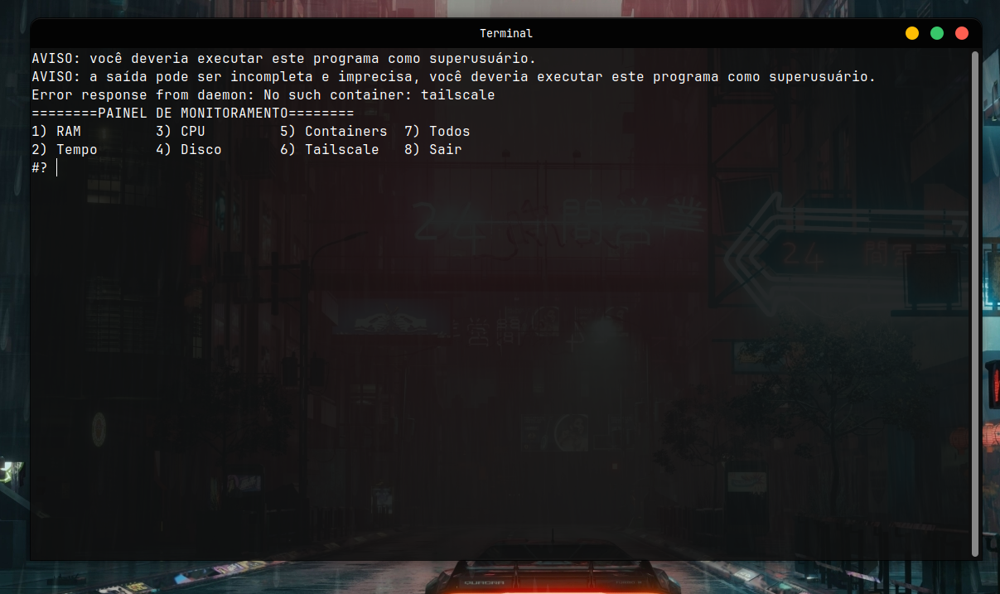
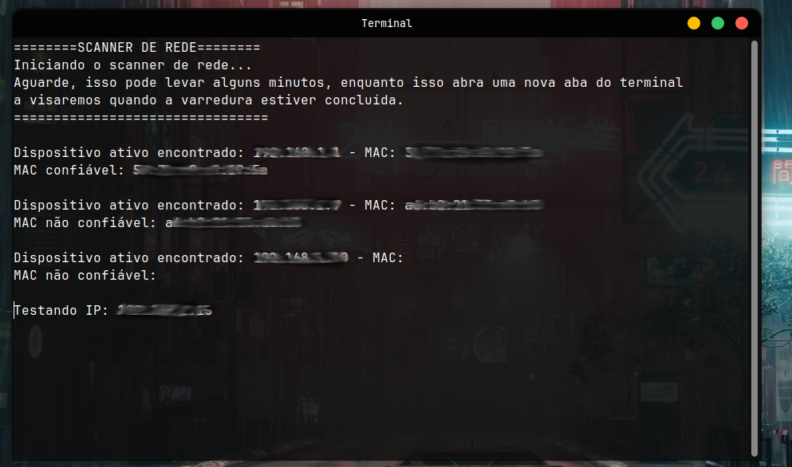
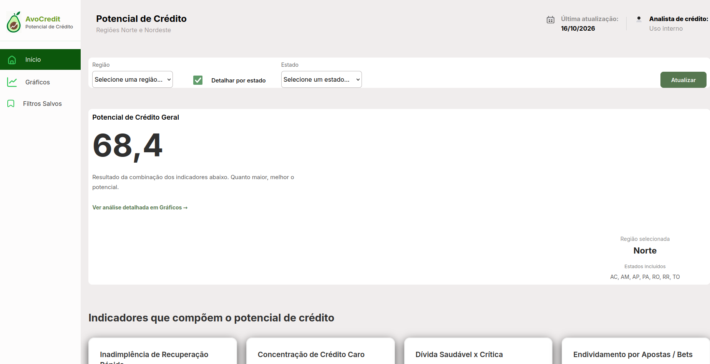

Sobre mim
Olá! Meu nome é Rafael Matheus dos Santos, estou cursando Desenvolvimento de Software Multiplataforma (DSM) e sou técnico em Administração.
Atualmente foco em infraestrutura e back-end. Antes de migrar para TI, tive experiência prática na área de logística, o que me deu uma base sólida em resolução de problemas e processos.
Desenvolvo scripts de automação em Bash e Python para gerenciar meu próprio servidor em casa. Tenho interesse particular nas áreas de infraestrutura, redes e administração de sistemas Linux, e estou em busca de oportunidades para aplicar e expandir esse conhecimento profissionalmente.

Habilidades Técnicas

Python

Bash
Flask
MySQL

Linux

Docker

Git

Github

AWS

Nginx
Habilidades Comportamentais
Proativo
Trabalho em equipe
Comunicação
Autodidata
Organização
Adaptabilidade
Formação
Desenvolvimento de Software Multiplataforma (DSM)
FATEC Prof. Jessen Vidal
Técnico em Administração
ETEC Machado de Assis

Batcomputer
Um projeto inspirado no Batcomputer do Batman, desenvolvido em Python. Oferece uma interface gráfica para acessar informações de saúde do servidor, execução de scripts, monitoramento de serviços e muito mais.

Monitor de Servidor
Um sistema para monitoramento do meu servidor, desenvolvido em Shell script. Ele permite monitorar o status de serviços e o uso de recursos como CPU, RAM e disco, entre outras métricas importantes.

Scanner de Rede
Um sistema de scanner de rede desenvolvido em Shell script, que permite identificar dispositivos conectados à rede. Faz uma varredura por todos os IPs possíveis e informa se o MAC relacionado ao IP é confiável ou não.

AvoCredit
Projeto desenvolvido em grupo na faculdade. Faz uma análise de crédito para pessoas de baixa renda, com foco nas regiões Norte e Nordeste.